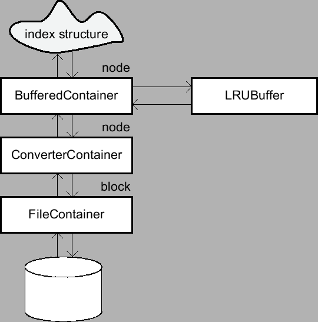

Next: Implementation of new Index Up: Index Structures Previous: Index Structures
Tree-based index structures keep their data in nodes where each of
them refers to a block that is generally of a fixed size. These
blocks are managed by an object that satisfies the interface
Container. Obviously, a user may implement his/her own
container classes.
Figure 1:
An example for using containers
|  |
A typical scenario for the usage of containers is illustrated in
Figure 1. The top container belongs to the
class BufferedContainer where presumably a large number of
nodes of the index structure are kept in the buffer. If a desired
node is not in the buffer, the node is requested from a
ConverterContainer. The only task of a
ConverterContainer is to convert a node into its block and
vice versa. Therefore, it forwards a request to a
FileContainer object that reads the desired block from
disk.
Bernhard Seeger
2001-10-11